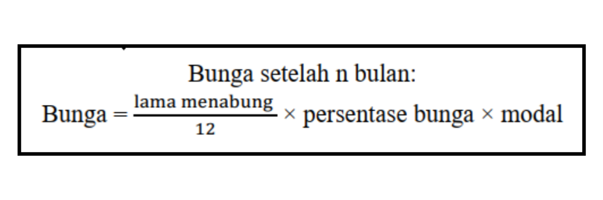

Tabungan Andi berjumlah Rp3.815.000,00, setelah ia menabung selama 9 bulan di koperasi ‘Maju Bersama’. Apabila koperasi tersebut memberikan bunga sebesar 12% per tahun sebagai imbalan. Berapa uang yang disimpan Andi mula-mula?
PENJELASAN
Dikerahui:
-
Saldo akhir adalah Rp3.815.000,00
-
Persentase Bunga adalah 12%
-
Lama Budi menabung adalah 9 bulan
Ditanya:
Berapa tabungan awal Andi?
Jawab:
INGAT!
Rumus awal untuk mencari bunga setelah n bulan yang telah kita pelajari sebelumnya:

Makakitakan memisalkan modal adalah M karena jumlah saldo tabungan awal Andi yang ingin kita cari tahu.
Bunga = \[ \frac{Lama \hspace{0.2cm} menabung n bulan}{12} \] × persentase bunga × modal
\[ \hspace{1.4cm}= \frac{9}{12} \] × 12% × M
\[ \hspace{1.4cm}= \frac{3}{4} × \frac{12}{100} \] × M
\[ \hspace{1.4cm}= \frac{9M}{100} \]
Jumlah saldo tabungan seluruhnya = Modal + Bunga
3.815.000 \[ \hspace{3cm}= M + \frac{9M}{100} \]
3.815.000 \[ \hspace{3cm}= \frac{100M}{100} + \frac{9M}{100} \]
3.815.000 \[ \hspace{3cm}= \frac{109M}{100} \]
M \[ \hspace{4.5cm} = 3.815.000 × \frac{109}{100} \]
\[ \hspace{5cm} = \] 3.500.000
Jadi, tabungan awal Andi saat menabung di koperasi ‘maju jaya’ adalah Rp3.500.000,00